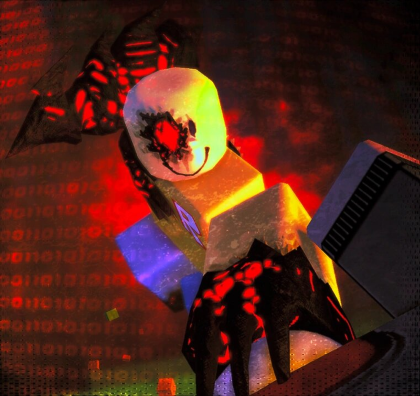
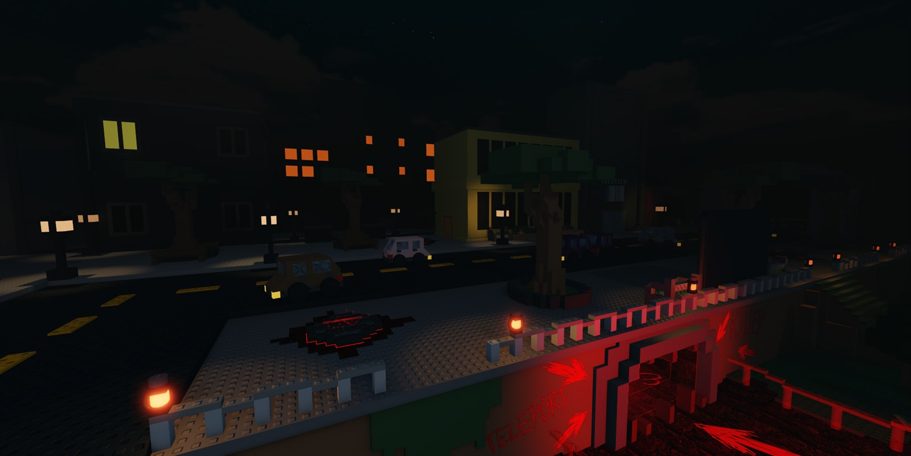

01
Один против всех
Убийца сильнее каждого по отдельности. Выжившие побеждают только вместе — или по очереди.

Один убийца. Четверо выживших.
Никто не уйдёт целым.
Асимметричный хоррор, где один игрок становится убийцей, а остальные — выжившими. Прячься, беги, используй способности и не дай ужасу подобраться слишком близко.
Убийца сильнее каждого по отдельности. Выжившие побеждают только вместе — или по очереди.
Чем ближе убийца — тем громче и быстрее музыка. Сердце подскажет раньше глаз.
У каждого персонажа свой набор способностей: ловушки, рывки, контроль времени и чистая ярость.
Аптечка на семь секунд. Ритуал на полпути. Один неверный шаг — и охота окончена.
Три шага, которые отделяют тебя от первого матча. Всё остальное — практика, слух и немного паранойи.
Открой опыт по кнопке «Играть». Загрузка карты и лобби занимает несколько секунд.
Убийца охотится, выживший прячется. В лобби можно осмотреть киты до старта раунда.
Слушай terror radius, считай кулдауны и не геройствуй. Один выживший важнее красивой смерти.
Выслеживай. Ломай. Не давай им собраться с силами.
Держись в тени. Считай секунды. Верь только себе.
The ground remembers my footsteps, and so will you. — John Doe
Скачай Roblox, найди FORSAKEN и помни: тишина — это ещё не безопасность.
Играть в RobloxТе, кто не оставляет следов. Только тела.
Нажми на строку, чтобы открыть досье. Заголовки колонок сортируют таблицу.
| # | ПЕРСОНАЖ | HP | СКОРОСТЬ | TERROR | СПОСОБНОСТИ | ЦЕНА |
|---|
У них нет шансов. Есть только время.
Десять мест, где лучше не задерживаться.
Иногда семь секунд — это целая жизнь.
Восстанавливает 80 HP за 7 секунд. Лечение прерывается, если получить урон. Один заряд. Иногда это единственное, что отделяет тебя от следующей ошибки.
Предмет не гарантирован: шанс спавна 35%, на карте появляется от 0 до 2 штук.
Один заряд восстанавливает 80 HP. Скорость лечения снижена до 0.2 от обычной.
Любой полученный урон прерывает процесс. Начинай лечение только в безопасном укрытии.
Аптечка — расходник, а не бесконечное лечение. Вот что важно помнить.
Слоты инвентаря уже готовы. Осталось дождаться, что в них положат.
Правила выживания. Читать до, а не после.
Один игрок становится убийцей, остальные — выжившими. Цель убийцы — казнить всех. Цель выживших — дожить до конца раунда, используя укрытия, предметы и способности.
У каждого убийцы свой радиус ужаса. Чем ближе он подходит, тем интенсивнее музыка и громче сердцебиение. Это твой главный радар — слушай, а не смотри.
Бег расходует стамину. Когда шкала пуста — ты идёшь. Убийца тоже ограничен, но его запас и скорость обычно выше. Не беги по прямой: ломай линию зрения.
Эффекты складываются в уровни. Один и тот же дебафф может как замедлить, так и полностью выдать тебя убийце.
Two Time собирает кровь ударами по убийце. Накопив достаточно и поставив точку ритуала, он получает шанс на вторую жизнь. Цена — риск подойти вплотную.
Короткая шпаргалка по тому, что именно на тебе висит и откуда это взялось.
| СТАТУС | ТИП | ЭФФЕКТ | ИСТОЧНИК |
|---|---|---|---|
| Corrupted I | ДЕБАФФ | Выдаёт ауру и усиливает давление убийцы | John Doe, ловушки |
| Slowness II | ДЕБАФФ | Сильно снижает скорость передвижения | Digital Footprint |
| Bleeding | ДЕБАФФ | Не даёт полностью восстановить здоровье | Slasher, ножи |
| Speed I | БАФФ | Кратковременный рывок скорости | Slash, ловушки, способности |
| Invisibility III | БАФФ | Скрывает силуэт на короткое время | Two Time, Crouch |
| Undetectable I | БАФФ | Скрывает убийцу от радаров и аур | Способности убийц |
| Resistance | БАФФ | Сокращает время оглушения и контроль | Doombringer, предметы |
Навсегда — нет. Выжившие могут нанести урон, оглушить или выиграть время, но раунд заканчивается не смертью убийцы, а survival-таймером или казнью всех выживших.
Это радиус ужаса вокруг убийцы. Чем ближе он находится, тем громче музыка и сердцебиение. Радиус зависит от персонажа: у Walker он меньше, у John Doe — больше.
Two Time собирает кровь ударами по убийце. Накопив 8 единиц и поставив ритуал, он получает вторую жизнь с половиной максимального HP. Вторая жизнь не бесконечна.
Цифровые ловушки Digital Footprint живут 165 секунд. При активации они дают убийце Speed I, а жертве — Corrupted I и Slowness II на 10 секунд.
Это административный персонаж-пасхалка. У него огромный запас HP и способность Kill Rush, но в обычной ротации он недоступен и не участвует в честном балансе.
Во вкладке «Патчи»: там собраны все 24 сборки из журнала проекта, включая правки персонажей, карт, света и админских инструментов.
За каждым раундом стоит чей-то неоплаченный долг. Вот только один из них умеет ходить.
В досье раскрываются связи John Doe, Two Time, Shedletsky, Slasher и других персонажей, а также устройство самого места. Если ты ещё не читал их истории — начни с досье, а не с этого архива.
Лишняя секунда, которой не нашлось места
«Tick tock. Your time is running out.»
Он не выбирал быть убийцей. Он — долг, который мир одолжил у будущего и не вернул. Внутри его циферблата — последняя минута Two Time, внутри клинка — чужая смерть, а на груди — знак бога, которого никогда не существовало.

Доступ закрыт Прочитай досье «Хронос» до конца ДОСЬЕ ЗАСЕКРЕЧЕНО FILE // LR-000Вечный ад. Счёт, которому дали комнаты
«Таймер уже идёт.»
У места нет адреса — только номер. Оно не строит миры, а занимает чужие: снимает копии с уголков Robloxia вместе с их последним днём и собирает с них долг. Карты, лобби, таймер и даже убийцы — строки одной бухгалтерии.
Доступ откроется после прочтения досье «Хронос» до конца.
Он и есть та самая лишняя секунда.
Скачать .mdГодами заброшенный код в штабе Roblox копится и однажды начинает хотеть.
Amarah превращает старую метку администраторов в выдуманного бога Спауна.
Two Time убивает Azure на поле ночной красавицы, чтобы тот вернулся.
Спаун молчит. Пластина под полем срабатывает сама и возвращает культиста к жизни.
Из зазора между двумя ударами сердца выходит человек с циферблатом вместо лица.
Девять старейшин платят по секунде. Долг Amarah остаётся висеть на границе леса.
Почти каждый, кого Хронос встречает в раунде, уже был в его стекле — или оставил там пустую строку.
Культист, в чьей последней секунде живёт Хронос. Он молится богу, которого нет.
Открыть досье →Долг, который вернули без спроса. Хронос не простил этого ни ему, ни его хозяину.
Настоящий должник. Время не ищет виноватых, поэтому Хронос находит только Two Time.
Хозяин игр. Не может прочитать Хроноса, потому что тот состоит из времени, которое не умеет считать.
Первый носитель кода. Рядом с ним стрелки Хроноса сбиваются на 404.
Открыть досье →Её последняя секунда смотрит из трещины на стекле. Хронос не знает её имени.
Протянул ему куриную ножку. Просто так. Хронос до сих пор не знает, что с этим делать.
Открыть досье → KILLERВремя без промежутка между секундами. Единственный, на кого не действует откат.
Открыть досье → KILLERТридцать секунд в узком коридоре, которые Хронос так и не смог внести в счёт.
Открыть досье → SURVIVORЕдинственный, кто честно просит у времени несколько секунд и платит вперёд.
Открыть досье →Записи открываются по очереди: дочитай одно досье — архив рассекретит следующее.
24 сборки. Один длинный путь от FirstPerson до финального света.
Последняя сборка перед релизом: Atmosphere, Bloom и лёгкая цветокоррекция. Ниже — весь путь проекта по журналу изменений.